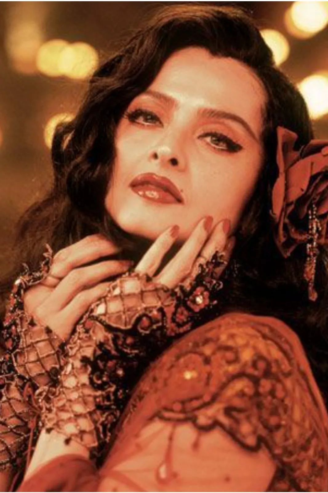

|  |
FASHION
Tracing Rekha's most iconic onscreen fashion moments — from signature Kanjeevaram Consider this a masterclass in maximalism 28 September 2022 |
Over the course of a five-decade-long career, Rekha has delivered what few
other contemporaries can lay claim to: a signature style that is inimitable in
its idiosyncrasy. Flip through her style files from the 1970s to now, and you
will find the diva in full element with a refined sartorial palette that is
divorced from fleeting fads and temporary trends. Gripped by snatches of
eccentricity but never fully descending into unrealism—this is an icon
whose style continues to find relevance today. Ahead, we take a look at her
most fashionable outings onscreen:

Rekha in Umrao Jaan(1981)
Anarkalis have never fallen out of favour in the realm of fashion, but Rekha decisively stamped her signature on the style as the alluring courtesan, Umrao Jaan (1981). Through lustrous silks and shimmering pearls, her captivating kohl-lined gaze captures the heartbreak and tragedy that underlines her story. Be warned: her lexicon of vintage-inflected ivory will convince you to give saturated jewel tones a timeout in your festive wardrobe this season.

Rekha in a still from Utsav(1984)
After two years of sequestering indoors, glamour is decisively back on the agenda. And there are few better places to look for inspiration than the erotica drama, Utsav (1984). Step within, and you will find yourself enamoured by the courtesan Vasantasena whose elevated take on layering temple jewellery will keep you sartorially inspired through the season.
Rekha in the 1988 film Khoon Bhari Maang

Rekha and Akshay in Khiladiyon ka Khiladi in 1996
…for statement headgear. Through the pages of her cinematic history, Rekha has demonstrated her love for impactful headwear, ranging from embroidered berets in Khiladiyon Ka Khiladi (1996) to lamé turbans so dramatic that people will have a hard time remembering what else you’re wearing.
Rekha in a Still from 2005 film,Parineeta
Now in her 50s, Rekha continued to immerse herself in the finest that the world of fashion had to offer, famously grabbing eyeballs with her scene-stealing guest appearance in 'Kaisi Paheli Zindangani' from Parineeta (2005). While today's generation recognises her by her signature Kanjeevarams, cinema-goers found her wardrobe inching closer to party girl territory with a cocktail-ready sari and coordinated hand mesh that you will want to keep at hand for the next invite-only soirée on your social calendar.